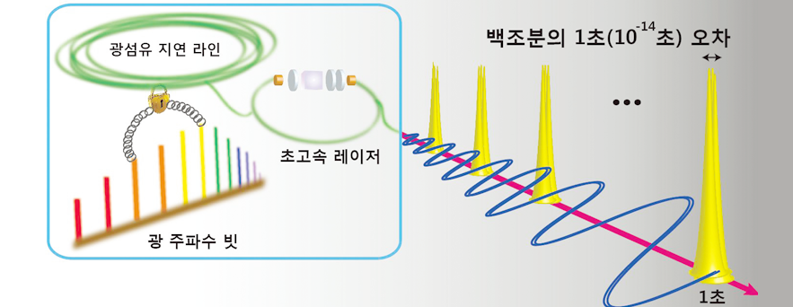

주제별 연구성과
주제별 연구성과
KAIST RESEARCH ACHIEVEMENTS
300조분의 1초 오차의
광섬유 클럭 발진기
기계공학과 김정원
요약
클럭 발진기는 일정한 시간 간격의 주기적 신호를 발생시켜 시스템이 그 신호에 맞춰 정확하게 동작하도록 만드는 장치이며, 오늘날 정보통신 뿐 아니라 거대과학, 계측, 레이더, GPS 및 위성항법 등 다양한 분야에서 핵심적 역할을 하고 있다. 본 연구는 클럭 발진기의 시간 및 위상 잡음 성능을 획기적으로 개선시킨 새로운 방식의 발진기를 개발했다. 그 결과 클럭 신호원의 성능을 나타내는 0.1초 동안의 시간오차인 타이밍 지터가 3펨토초(333조분의 1초)로 측정됐으며, 이는 환산하면 100만년 동안 1초의 오차를 갖는 성능에 해당한다. 고성능 발진기 기술은 군용 레이더, 보안 통신 분야와의 연관성 때문에 주요 장비들의 자국 밖 수출이 금지된 경우가 많아, 순수 국내 기술로 고성능 발진기를 자체 개발한 것은 그 의의가 크다.
연구내용
클럭 발진기(clock oscillator)는 일정한 시간 간격의 주기적 신호를 발생시켜 시스템이 그 신호에 맞춰 정확하게 동작하도록 만드는 장치로서 마치 음악 연주에서 메트로놈과 같은 역할을 한다. 이 클럭 발진기는 오늘날 각종 정보통신 시스템 뿐 아니라 입자가속기나 위상배열안테나와 같은 거대 과학시설, 초정밀 계측 장비, 레이더, GPS 및 위성항법시스템 등 현대 과학기술 전분야에 걸쳐 핵심적 역할을 하고 있다. 따라서 클럭 발진기에서 발생하는 주기적 신호의 시간 오차를 줄인다면 각종 시스템들의 획기적인 성능 향상과 이전에는 불가능했던 기술 개발도 가능해진다.
기존의 최고 성능 발진기들은 특수 제작된 공진 회로를 이용한 라디오파(RF) 혹은 마이크로파(microwave) 발진기를 사용하거나 광공진기의 주파수 나눔을 이용한 방식의 기술을 사용했으나, 이들 방식은 크기가 클 뿐 아니라 기계적 안정도가 떨어지고 수억 원 이상의 고가였기 때문에 실험실 밖에서의 응용 등에 한계가 있었다. 연구팀은 이러한 기존의 최고성능 발진기들의 문제를 해결하기 위해 신뢰성이 높고 가격경쟁력이 확보된 광통신용 광섬유 부품들만을 활용한 새로운 광학 발진기(photonic oscillator)를 개발했다. 기술의 핵심은 초고속 광섬유 레이저(ultrafast fiber laser)에서 발생하는 넓은 스펙트럼 내의 두 광주파수(optical frequency) 차이를 이용한 잡음 검출 방식이다. 기존 전자 발진기는 기가헤르츠(GHz, 1초에 109회 진동) 영역에서 동작하지만, 이 기술은 테라헤르츠(THz, 1초에 1012회 진동) 주파수를 이용하기 때문에 약 1000배 민감한 주파수 및 시간 측정이 가능하다. 또한 광섬유 케이블에서 빛이 전파되는 시간이 단기간 동안 매우 일정하게 유지되기 때문에 테라헤르츠 주파수를 이용해 높은 분해능으로 측정된 시간차를 광섬유 케이블내에서의 빛의 전파 시간에 정확하게 맞춤으로써 주파수를 안정화하였다.

그림 1. 수백조분의 1초 오차의 광섬유 클럭 발진기 개념도
:초고속 광섬유 레이저에서 나오는 광주파수빗을 광섬유 지연 라인에
안정화하는 방식이다. 그 결과 0.1초(1초) 동안 300조분의 1초 (100조분의 1초) 오차의 펄스열(pulse train) 형태의 클럭 신호를 만들어낼 수 있다.
그 결과 국제전기통신연합(ITU)에서 정의한 클럭 신호원의 성능을 나타내는 0.1초 동안의 시간오차인 타이밍 지터(timing jitter)가 3펨토초(333조분의 1초)로 측정됐으며, 이는 환산하면 100만년 동안 1초의 오차에 해당한다. 측정된 성능은 실온에서 동작하는 고성능 마이크로파 발진기들과 비교하면 이미 세계 최고의 성능에 해당하며, 앞으로의 기술적 개선을 통하여 10배 이상의 추가적인 성능 향상이 가능할 것으로 예상된다. 이 연구를 통해 별도의 특수 제작된 고가 소자 없이도 세계적 수준의 발진기 성능을 얻을 수 있고, 상용화 시 제작비용을 기존 최고 성능 발진기의 10분의 1 이하 수준으로 낮출 수 있게 되었다. 이 연구의 결과물은 그 성능 및 안정성 때문에 아날로그-디지털 변환기나 고성능 신호 분석기와 같은 ICT 시스템, 레이더, 원격 탐사, 거리 측정, 위성항법, 위성탑 재체 등 국방, 우주, 환경 기술 분야에서도 폭넓게 활용될 수 있을 것으로 기대된다. 특히 고성능 발진기 기술은 군용 레이더나 보안 통신 분야와의 연관성 때문에 주요 장비들이 자국 밖으로의 수출이 금지된 경우가 많아 순수 국내 기술로 이러한 고성능 발진기를 자체 개발한 것은 그 의의가 크다 할 수 있다. 연구팀은 향후 유리기판 위에 이 시스템을 구현해 칩-스케일의 고성능 클럭으로까지 발전시킬 계획이다.
연구비지원
ㆍ한국연구재단 중견연구자지원사업(Grant no. 2012R1A2A2A01005544)
연구실적
ㆍ논문 : All -fibre photonic signal generator for attosecond timing and ultralow noise microwave, Scientific Reports, 5, 16250(2015)
ㆍ특허 : PCT/KR2015/012513, Method for measuring and suppressing phase noise of repetition rate of femtosecond laser by optical fiber delay line
ㆍ조선일보 기사 "333조분의 1초 오차.. 초정밀 통신 신호 기술, KAIST 연구진이 개발"(2015. 11. 13)
ㆍ연합뉴스, YTN 뉴스 등 16개 언론사 기사 "KAIST, 광섬유로 오차범위 300조분의 1초 클럭 발진기 개발(2015. 11. 12)
ㆍ2015년 KAIST 기술혁신상(우수상) 수상